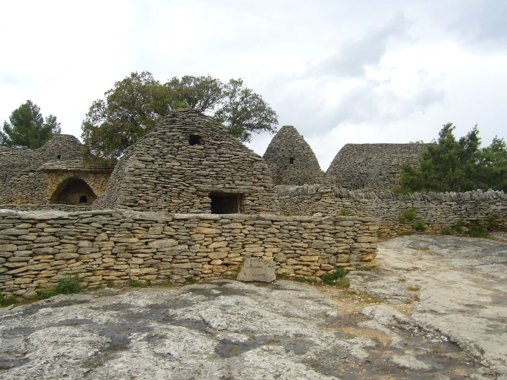

{kind=link}

Abbaye de Sénanque
1148년 깊은 협곡 속에 세워진 12세기 시토회(Cistercian) 로마네스크 수도원. 일체의 장식을 배제한 절대적 청빈의 중세 석조 건축과 현재도 이어지는 수도사들의 침묵 기도.

고르드 서쪽 4km 떡갈나무 숲속에 완벽하게 보존된 프로방스 고유의 건식 석조(Pierre sèche) 원추형 오두막 '보리(Borie)' 20여 채로 이루어진 야외 박물관이다.
회반죽이나 못, 목재 지지대를 전혀 쓰지 않고, 밭을 개간할 때 걷어낸 납작한 석회암 판석(Lauzes)을 정밀하게 맞물려 쌓아 올린 내어쌓기(Corbelling) 기법으로 축조되었다.
18~19세기 프로방스 농민들이 올리브 수확, 포도 재배, 양 방목 등 계절 농업 노동을 할 때 임시 거처, 양 우리, 곡물 저장고, 누에 치는 방, 빵 가마로 사용했던 민중 생활사의 생생한 현장이다.
"귀족의 화려한 성채나 수도원이 아닌, 척박한 돌밭을 일구며 살아온 프로방스 서민들의 천재적인 석조 건축술을 가장 생생하게 목격하는 장소다." 여기서 건식 석조의 결구 원리를 이해하고 나면, 이후 뤼베롱 전역의 돌담과 밭두렁이 전혀 새롭게 보이기 시작한다. 45~60분간 20여 채의 오두막 내부와 가마를 둘러보기에 적합하다.
| 운영시간 | 9/1–9/30 09:00–19:00 · 최종입장 30분 전 |
|---|---|
| 휴무 | 연중무휴 (12/25·1/1 만 휴장) |
| 요금 | 성인 €8 · 12–17세 €4 · 12세 미만 무료 |
| 예약 | 개인 방문 예약 불필요. 10인 이상 단체만 사전 예약. 9월 09:00~19:00(최종입장 폐장 30분 전), 성인 8유로 |
상설 주택이 아닌 계절별 노동 거점이었기 때문에 창문이 거의 없고 입구가 낮다. 내부에는 화덕, 빵 굽는 오븐, 가축 우리, 와인 압착기, 곡물 보관대 등이 배치되어 있어 당시 농가 생활의 자급자족 구조를 보여준다.
| 항목 | 상세 정보 |
|---|---|
| 위치 | Les Savournins, 84220 Gordes |
| 운영 시간 | 매일 09:00–17:30 (하절기 19:00까지) / 연중무휴 (동절기 일부 휴무) |
| 입장료 | 성인 €6.00, 어린이(10~17세) €4.00, 10세 미만 무료 (현장 매표소 발권) |
| 운전 주의 (필수) | 고르드 서쪽 D2/D15 도로에서 진입하는 마지막 1.5km 도로는 차량 교행이 어려운 1차선 좁은 비포장/포장 시골길이므로 서행 운전 및 마주 오는 차량 양보 필수 |
| 주차 & 보행 | 유적지 입구 전용 주차장 무료 이용 가능. 주차 공간 만차 시 외곽 도로변 정차 후 약 1km 도보 진입 필요 |
| 편의시설 | 매표소 옆 화장실, 소형 기념품점 완비 (유적지 내부 식음료 반입 및 피크닉 금지) |
1148년 깊은 협곡 속에 세워진 12세기 시토회(Cistercian) 로마네스크 수도원. 일체의 장식을 배제한 절대적 청빈의 중세 석조 건축과 현재도 이어지는 수도사들의 침묵 기도.

뤼베롱 산맥 북사면에 층층이 솟아오른 가장 낙차가 큰 계단식 언덕 마을. 해발 425m 옛 성당(Vieille Église) 정상 테라스에서 맞은편 라코스트(Lacoste) 성채와 계곡 전체를 굽어보는 압도적 파노라마.

뤼베롱 현지 농부들이 직접 재배하고 만든 신선 농산물과 특산품만 판매하는 프랑스 공인 정통 생산자 직거래 일요 시장(Marché Paysan). 뤼베롱 농가 체류의 최고의 식재료 보급 거점.

보클뤼즈 고원 가장자리 백색 석회암 절벽 위에 층층이 솟아오른 뤼베롱 최고의 요새 마을. 마을 진입로에서 마주하는 압도적인 파노라마 전경과 11세기 중세 르네상스 성채.

대형 관광버스가 닿지 않아 뤼베롱에서 가장 고요하고 평화로운 '숨겨진 보석' 마을. 언덕 정상의 17세기 예루살렘 풍차(Moulin de Jérusalem)와 현지인들의 정겨운 일상이 살아있는 골목길.

알베르 카뮈가 영면한 뤼베롱 남부의 평탄하고 세련된 예술 마을. 프로방스 최초의 르네상스 성(Château de Lourmarin), 플라타너스 그늘 아래 카페 테라스, 로즈마리에 덮인 소박한 카뮈의 묘소.